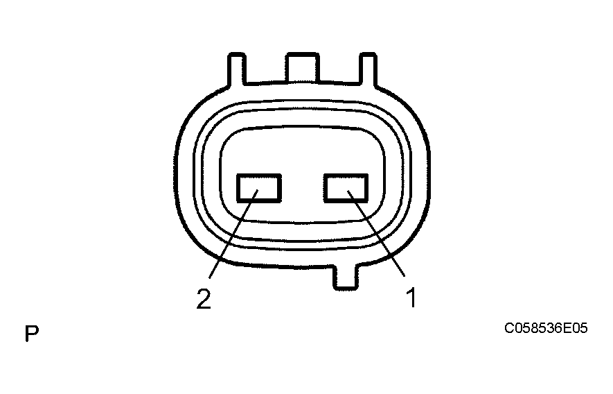

Transmission Revolution Sensor: Inspection
WARNING: This page is about a different variant/trim than selected.
- INSPECT TRANSMISSION REVOLUTION SENSOR
- Measure the resistance of the sensor.
Standard resistance
TESTER CONNECTION SPECIFIED CONDITION
| Tester Connection |
Condition |
Specified Condition |
| 1 - 2 |
20°C (68°F) |
560 to 680 Ω |

Courtesy of © TOYOTA, LICENSE AGREEMENT TMS1002
If the result is not as specified, replace the sensor.